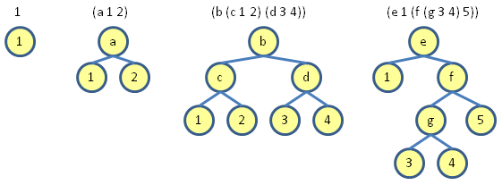

Backus Naur Form (BNF)
Backus Naur Form (or Backus Normal Form or BNF) is a way of specifying data types and language syntax. It has three components:
- A set of terminals which require no further definition.
- A set of non-terminals or syntactic categories that are defined in terms of other terminals and non-terminals.
- A set of productions or rules, that state how to construct a terminal from non-terminals and terminals.
The left hand side of the definition is the non-terminal, and the right hand side is the production or rule.
For example, the BNF for a list of symbols in Scheme is:
<list-of-symbols> ::= ()
| (<symbol> . <list-of-symbols>)
Here "( )", "." and "<symbol>" are terminals and <list-of-symbols> is the non-terminal. To explain the Scheme syntax a little () is an empty list, (x . y) is a "dotted pair", and and a proper list is made by dotting pairs together terminating in an empty list, so (x . (y . (z . ()))) equals the proper list (x y z).
| Backus Naur Form | |
|---|---|
| ::= | Definition |
| | | or |
| {....}* | 0 or more |
| {....}+ | 1 or more |
| [....] | optional |
| <....> | terminal or non-terminal |
Backus Normal Form is an inductive definition. In an inductive definition you list one or more specific examples, and describe how to construct more complex examples from simpler ones. You can see that the list of symbols example is inductive, since list-of-symbols appears on both sides of the equation.
Another example is the BNF for a binary tree:
<tree> ::= <number>
| (<symbol> <tree> <tree>)
Here are some binary trees which obey this definition:

I recently saw on Eric Lippert's blog a rather more thorough discussion of binary trees, including the interesting snippet that the number of binary trees with n nodes is given by the Catalan numbers (2n)!/(n+1)!n!
An final example of BNF is the definition for a nested list of symbols, s-list:
<s-list> ::= ()
| (<symbol-expression> . <s-list>)
<symbol-expression> ::= <symbol>
| <s-list>
Examples of the types of nested list you can make are:
()
(())
(a)
(a b c d)
((a) (b) (c) (d))
((a b) c (d e (f (g))))
In the past I've always been quite annoyed by Back Naur Form, mainly because computer manual writers tend to tell you the BNF for some language syntax rather than giving examples of actual usage. Maybe now I understand BNF a little better I won't be quite so annoyed. But I still think examples work best for explaining, definitions are only really useful when you understand what your talking about.